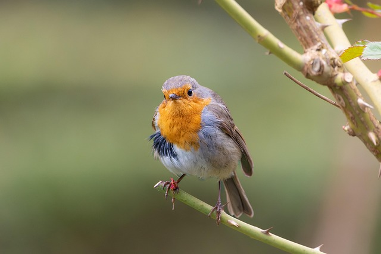

beatiful pictyres

This is beatiful brids
Text messaging is most often used between private mobile phone users, as a substitute for voice calls in situations where voice communication is impossible or undesirable (e.g., during a school class or a work meeting). Texting is also used to communicate very brief messages, such as informing someone that you will be late or reminding a friend or colleague about a meeting. As with e-mail, informality and brevity have become an accepted part of text messaging.